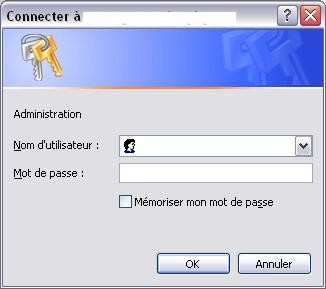

Bonjour à tous. Je vais vous apprendre à protéger un dossier de votre site web par un .htaccess valide sur les sites free.fr.
Dans ce tuto, vous devrez créer trois fichiers pour protéger votre site. Merci de lire le tuto jusqu'à la fin, car les dernières lignes (concernant l'envoi sur le serveur) sont très importantes.
Grâce à ce tuto, nous voulons protéger une page, un dossier, voire tout notre site avec la fonction .htaccess.
Si un utilisateur souhaite accéder à la page protégée, le navigateur lance une invite qui demande à saisir un identifiant et un mot de passe. Voici l'aperçu d'une invite :

La fonction .htaccess est composée de deux fichiers essentiels : le premier contient les informations relatives à la sécurité, le deuxième contient les données, c'est-à-dire les identifiants et mots de passe autorisés. Un troisième fichier renforce la protection des mots de passe.
Nous allons tout d'abord créer le fichier .htaccess.
Dans un premier temps, nous allons créer un fichier texte (ayant l'extension .txt) qui sera renommé par la suite, à la fin du tuto.
Ouvrez un éditeur de texte comme Bloc-notes (sous Windows), ou Notepad++ (se reporter à la création de site internet, rédigée par M@teo) et entrez ces quelques lignes :
On remarque que le code possède quatre lignes. Cependant, nous n'allons modifier que les deux premières. La première ligne débute par PerlSetVar AuthFile, elle indique l'arborescence de votre site à partir de la racine.
Oula o_O !! De quoi il nous parle ??? C'est très simple : votre site free se présente sous la forme suivante : http://pseudo.free.fr/. Cette expression en gras est appelée la racine. Lorsque vous construisez votre site, vous mettez des fichiers directement à la racine (exemple : http://pseudo.free.fr/index.html), ainsi que des fichiers appartenant à des répertoires (exemple : http://pseudo.free.fr/football/zidane.html).
Pour modifier la ligne PerlSetVar AuthFile, vous devez saisir à la suite le nom du dossier à protéger.
Exemple n°1
Je veux créer une partie de mon site, nommée admin et située à la racine, où seulement les administrateurs pourront accéder. L'URL de la racine de mon site est la suivante :
http://pseudo.free.fr/
Je souhaite donc que le répertoire protégé soit le suivant :
http://pseudo.free.fr/admin/
A la ligne de mon code commençant par PerlSetVar AuthFile, je saisis admin/htpasswd.txt, ce qui me donne ce code :
Je m'arrête ici mais bien sûr, on peut protéger un dossier qui se trouve dans un dossier qui lui-même se trouve dans un dossier... Bref, à l'infini !
Nous allons nous intéresser brièvement à la ligne AuthName "Acces Restreint". C'est cette ligne qui accueille l'utilisateur et lui demande ses identifiants. Vous pouvez donc changer le message d'accueil qui se trouve entre guillemets (ici, "Accès Restreint").
Les deux autres lignes n'ont pas besoin de subir de modifications.
Maintenant, nous allons enregistrer ce code sur notre disque dur avec le nom htaccess.txt.
Notre premier fichier htaccess.txt est créé, il faut maintenant, créer le fichier htpasswd.txt.
Pour créer ce nouveau fichier, ouvrez d'abord, comme tout à l'heure, un éditeur comme Bloc-notes. A présent, entrez les identifiants et mots de passe que le navigateur autorisera. Le code que vous allez définir se présentera sous cette forme :
Remplacez identifiant1 par votre identifiant, et motdepasse1 par votre mot de passe, en séparant les deux noms par deux points (:). Retournez à la ligne pour définir un autre paramètre. Vous pouvez créer autant d'indentifiants et de mots de passe que vous souhaitez.
Enregistrez ce code sur votre disque dur sous le nom htpasswd.txt.
A ne pas confondre avec le premier fichier créé, .htacces protège SEULEMENT les mots de passe. Ouvrez donc notre éditeur de texte (Bloc-notes) pour la dernière fois et entrez cette seule ligne :
deny from all
Enregistrez ce merveilleux code :p sur votre disque dur sous le nom htacces.txt.
Vous avez créé les trois fichiers nécessaires à la fonction .htaccess, mais ils sont toujours sur votre disque dur ! Nous allons donc les envoyer sur le serveur de free.
Ouvrez votre client FTP, et connectez-vous au serveur.
Vous allez, à présent, envoyer les trois fichiers (htaccess.txt, htpasswd.txt et htacces.txt) dans le dossier que vous souhaitez protéger.
Directement sur le serveur, renommez les fichiers htaccess.txt et htacces.txt respectivement en .htaccess et .htacces.
Dans votre dossier protégé, vous avez donc au moins les fichiers : .htaccess .htacces htpasswd.txt
Voilà !! Le tuto touche à sa fin. J'espère que mes informations ont été nettes et précises afin de vous permettre, à votre tour, de protéger votre site web. Pour plus d'informations ou des remarques concernant les codes, n'hésitez pas à m'envoyer un MP.